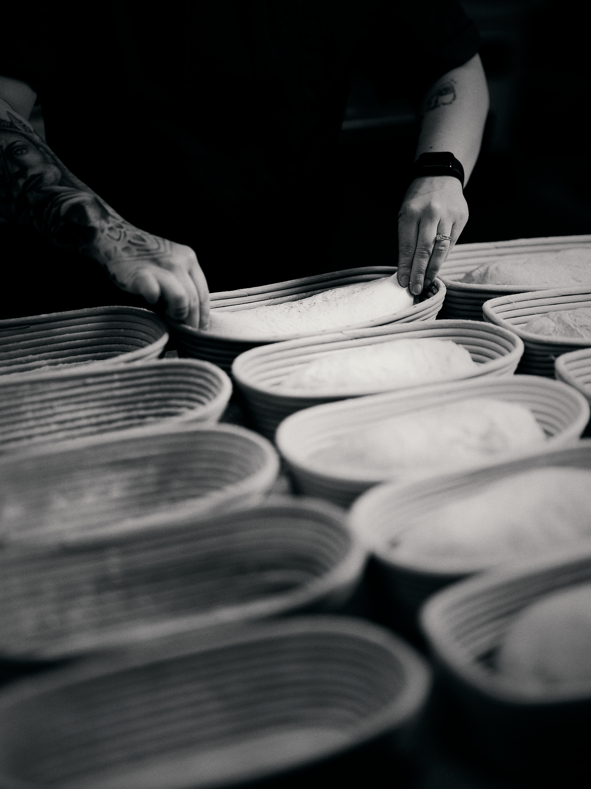
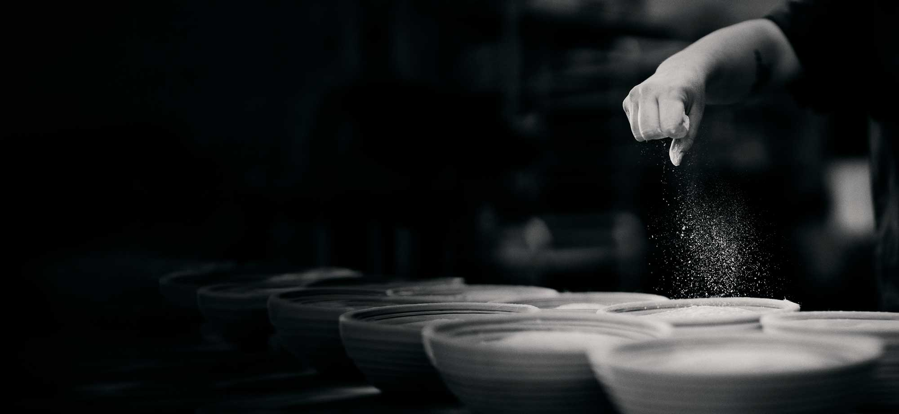
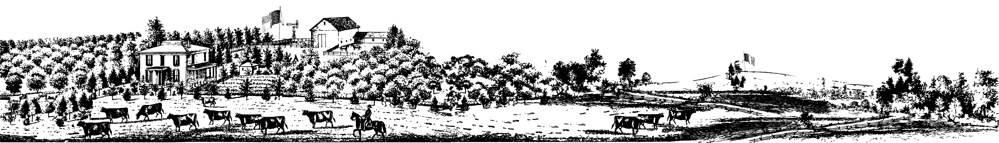

The story of our bread begins with the decades-old sourdough starter that breathes life into every loaf we bake. Then, just down the road at Lindley Mills in Graham, North Carolina, wheat is harvested and milled to our exact specifications, with 90% of it being super-sprout™. Not only does this mean every Copain loaf has a deeper, smoother, more "round" taste, but it's also more nutritious, easier to digest, and bakes to the unmistakable golden brown we have come to know and love in the old world breads of France.
Learn more



Nearly forty years ago, we embarked upon an artisanal endeavor to create our own unique versions of the foundational French fare and share it with our friends, family, and food community.
Order now